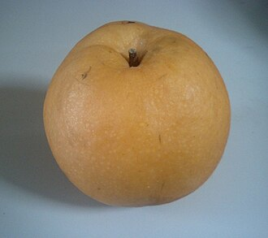

なし（梨）の生産量 都道府県ランキング
全30県の順位と、とれた量
なしが日本でいちばん多くとれるのは千葉県です。2万1,400 tで、全国（17万2,700 t）の12%を占めます。

| 順位 | 都道府県 | 収穫量 | 全国に占める割合 |
|---|---|---|---|
| 1位 | 千葉県 | 2万1,400 t | 12% |
| 2位 | 茨城県 | 1万7,100 t | 9.9% |
| 3位 | 福島県 | 1万4,800 t | 8.6% |
| 4位 | 栃木県 | 1万4,600 t | 8.5% |
| 5位 | 長野県 | 1万1,700 t | 6.8% |
| 6位 | 鳥取県 | 1万300 t | 6.0% |
| 7位 | 大分県 | 5,920 t | 3.4% |
| 8位 | 新潟県 | 5,820 t | 3.4% |
| 9位 | 埼玉県 | 5,670 t | 3.3% |
| 10位 | 福岡県 | 5,410 t | 3.1% |
| 11位 | 熊本県 | 5,350 t | 3.1% |
| 12位 | 愛知県 | 4,440 t | 2.6% |
| 13位 | 群馬県 | 3,570 t | 2.1% |
| 14位 | 神奈川県 | 3,300 t | 1.9% |
| 15位 | 徳島県 | 3,240 t | 1.9% |
| 16位 | 富山県 | 3,170 t | 1.8% |
| 17位 | 佐賀県 | 2,870 t | 1.7% |
| 18位 | 秋田県 | 2,290 t | 1.3% |
| 19位 | 宮城県 | 2,210 t | 1.3% |
| 20位 | 広島県 | 2,180 t | 1.3% |
| 21位 | 石川県 | 2,090 t | 1.2% |
| 22位 | 山口県 | 1,790 t | 1.0% |
| 23位 | 岐阜県 | 1,670 t | 1.0% |
| 24位 | 山形県 | 1,370 t | 0.8% |
| 25位 | 東京都 | 1,210 t | 0.7% |
| 26位 | 兵庫県 | 939 t | 0.5% |
| 27位 | 京都府 | 761 t | 0.4% |
| 28位 | 福井県 | 702 t | 0.4% |
| 29位 | 滋賀県 | 576 t | 0.3% |
| 30位 | 香川県 | 279 t | 0.2% |
この数字について
- 分類：バラ科
- 全国の収穫量：17万2,700 t
- この数字が表すもの：収穫量（畑や田でとれた重さ）
- 調査：作物統計調査 作況調査（果樹） 令和6年産
- 30県分を調査（調査していない県は順位に入りません）
なしの生産量について、よくある質問
- なしの生産量が日本一の都道府県はどこですか？
- 千葉県です。作物統計調査 作況調査（果樹）（令和6年産）で2万1,400 tでした。
- なしの生産量ランキング2位・3位はどこですか？
- 2位は茨城県（1万7,100 t）、3位は福島県（1万4,800 t）です。
- なしの生産量ランキング4位・5位はどこですか？
- 4位は栃木県（1万4,600 t）、5位は長野県（1万1,700 t）です。なしの全30県の順位は上の表のとおりです。
- なしの全国の生産量はどれくらいですか？
- 17万2,700 t（令和6年産）です。